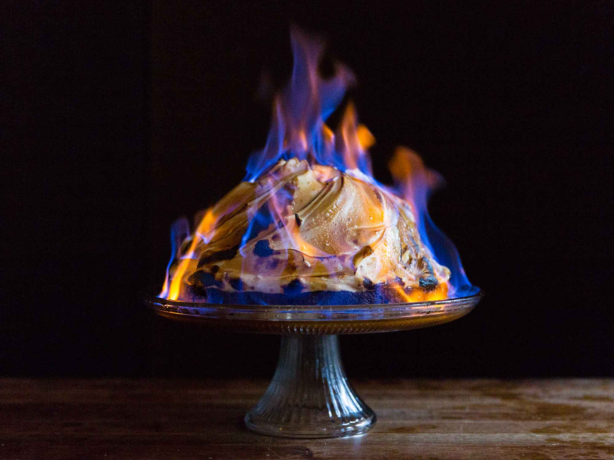

Baked Alaska
>
Description
Baked Alaska consists of cake, ice cream, and meringue.
Ingredients
- 2 quarts vanilla ice cream, softened, or as needed
- 8 egg whites
- ⅛ teaspoon cream of tartar
- ⅛ teaspoon salt
- 1 cup of white sugar
- 1 8-inch round prepared white cake layer
Steps
- Gather ingredients.
- Line the bottom and sides of an 8-inch round mixing bowl with plastic wrap. Pack softened ice cream into
the prepared bowl, then flatten the top and cover with more plastic wrap. Freeze until firm, 8 hours to
overnight.
- Beat egg whites, sugar, cream of tartar, and salt in a mixing bowl until stiff peaks form.
- Line a baking sheet with parchment paper and place cake in the center. Remove ice cream from the
freezer, discard plastic wrap, and turn ice cream out on top of cake.
- Quickly spread meringue over ice cream and cake, swirling in decorative patterns if desired. Freeze for 2
hours.
- Preheat the oven to 425 degrees F (220 degrees C).
- Bake cake on the lowest oven shelf until meringue is light brown, 8 to 10 minutes.
- Slice and enjoy!